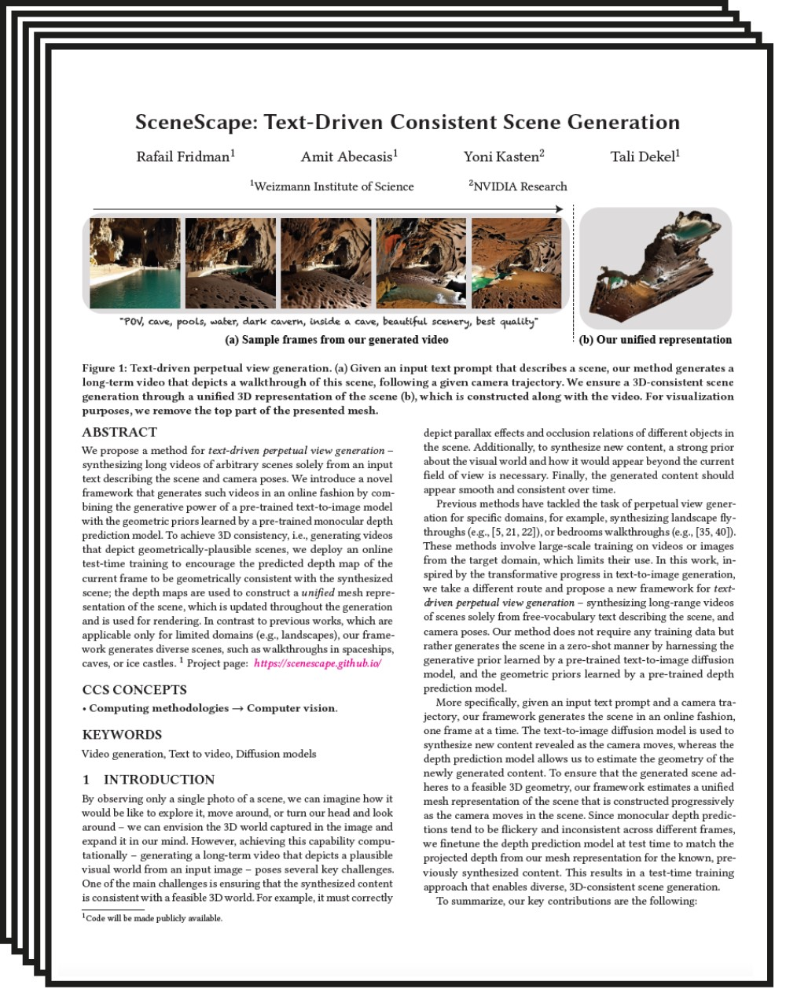
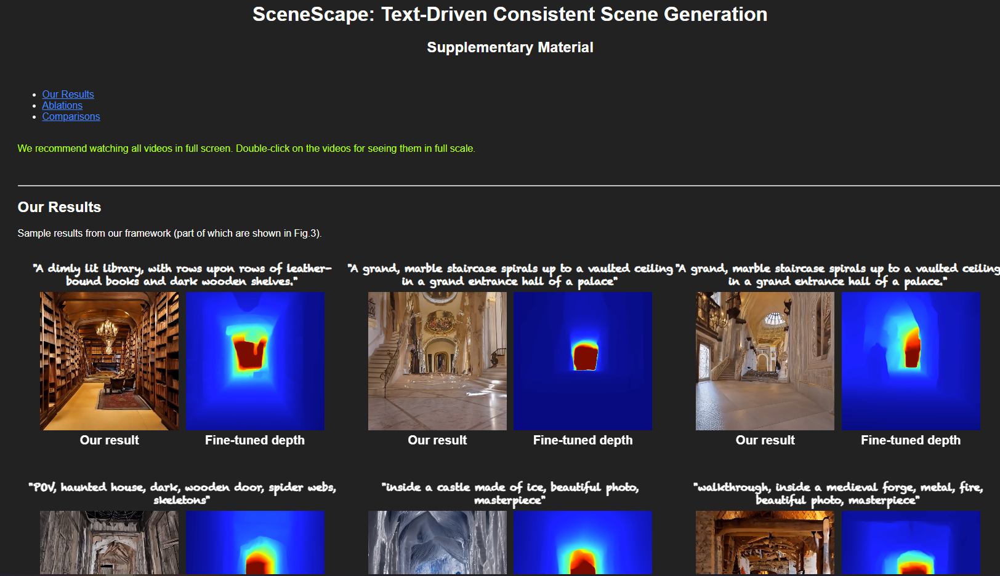

SceneScape: Text-Driven Consistent Scene Generation
| 1 Weizmann Institute of Science |
| 2 NVIDIA Research |
| | Paper | Supplementary Material | |
Abstract
We propose a method for text-driven perpetual view generation – synthesizing long videos of arbitrary scenes solely from an input text describing the scene and camera poses. We introduce a novel framework that generates such videos in an online fashion by combining the generative power of a pre-trained text-to-image model with the geometric priors learned by a pre-trained monocular depth prediction model. To achieve 3D consistency, i.e., generating videos that depict geometrically-plausible scenes, we deploy an online test-time training to encourage the predicted depth map of the current frame to be geometrically consistent with the synthesized scene; the depth maps are used to construct a unified mesh representation of the scene, which is updated throughout the generation and is used for rendering. In contrast to previous works, which are applicable only for limited domains (e.g., landscapes), our framework generates diverse scenes, such as walkthroughs in spaceships, caves, or ice castles.
Depth Model Finetuning
Monocular depth predictions tend to be inconsistent, even across nearby video frames. That is, there is no guarantee the predicted depth of the frame would be well aligned with the current scene geometry.We mitgate this problem by taking a test-time training approach to finetune the depth prediction model to be consistent as possible with the current scene geometry.
"walkthrough, sci-fi ship interiors, corridors,amazing quality, masterpiece, beautiful scenery, best quality"
"inside a castle made of ice, beautiful photo, masterpiece"
"POV, cave, pools, water, dark cavern, inside a cave, beautiful scenery, best quality"
Paper
|  |
SceneScape: Text-Driven Consistent Scene Generation |
Supplementary Material
|  |
Bibtex
Acknowledgments
We thank Shai Bagon for his insightful comments. We thank Narek Tumanyan for his help with the website.